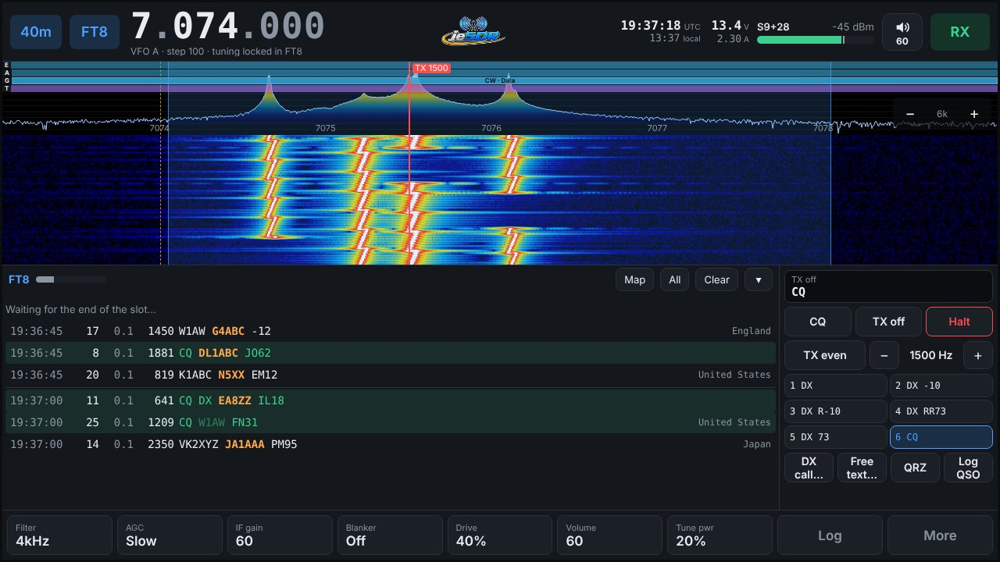
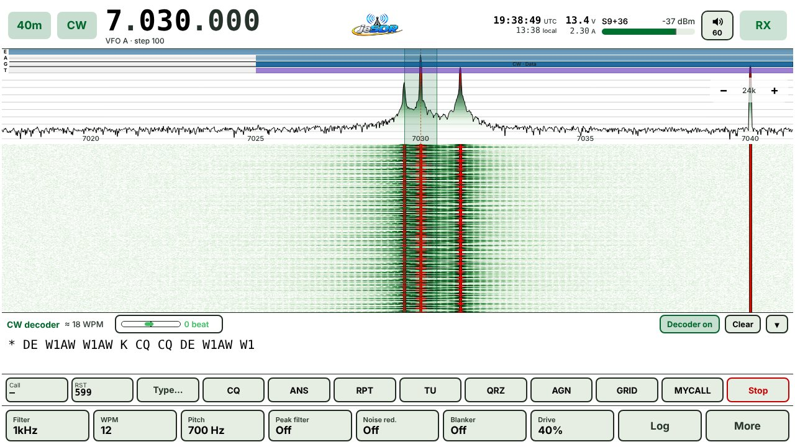
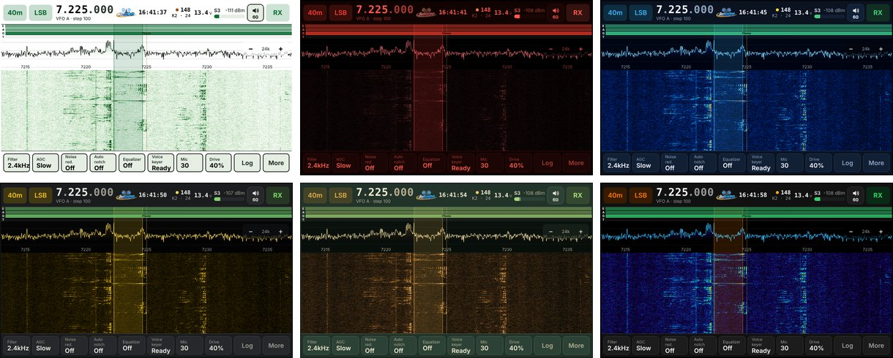

See it
The same screen on the radio's touchscreen, a laptop, a tablet or a phone. These are real screens from jeSDR.



What's inside
Everything runs on the radio. Open it from the touchscreen, a laptop, a tablet or a phone — no extra software to install.
A radio screen in any browser
Spectrum and waterfall, band stacks, filters with adjustable low and high cut, receive and transmit equalizers, twelve themes, a Quick page you arrange yourself, settings search, and kiosk mode for the radio's own touchscreen.
Listen and talk from anywhere in the house
Receive audio in the browser, and transmit with your phone or laptop microphone over HTTPS. A TX audio scope shows what you are sending.
Split, RIT and XIT NEW
Work a pile-up with split on either VFO, move the receiver with RIT or the transmitter with XIT. The screen always shows where you will transmit, and a band plan for your country warns before you go outside your privileges.
Digital modes built in
FT8, FT4 and FT2, RTTY, PSK and JTTY decode and transmit right in the web UI. FT8 can answer callers or call CQ for you, hunt for new ones, send POTA, SOTA or WWFF CQs, and show a grid map. WSJT-X and fldigi work too.
CW decoder, keyer and macros
Decode CW on screen, zero-beat with the tuning bar, and send stored macros. Key from the front-panel jack with a straight key, bug or iambic paddles, with adjustable weighting and spacing.
RADE, voice keyer and recordings
FreeDV RADE V1 digital voice, eight recorded voice messages with auto-repeat for calling CQ, and recordings of what you hear and say that you can download from any device.
Quieter listening
Two kinds of noise reduction, a noise blanker, an automatic notch and peak filter, and automatic IF gain. The S-meter is calibrated band by band and reads the same at any gain.
DX cluster on the waterfall
Live spots from a telnet DX cluster appear on the spectrum. Tap a spot to tune it. Country lookups, a country file you can update from the web UI, and qrz.com links are built in.
Logbook and activations
Log from the web UI or the digital modes, export ADIF, and get POTA, WWFF and SOTA activation files in one tap. GridTracker, JTAlert, Log4OM and N1MM+ follow along over UDP.
Made for portable operating
Battery monitoring with low-voltage protection (with an INA260 sensor), a battery saver, a transmit timeout, Pi temperature warnings, and a USB GPS for clock and grid with no internet. Turn the waterfall speed down to keep the Pi cool.
Calibration in the browser
Automatic PA power calibration on every band, an SWR scan, a two-tone test for checking linearity, and S-meter calibration. Back up and restore all your settings, log and voice messages as one file.
Signed one-click updates
The radio checks for new versions and installs them from More → About. Every update is signed, and if a new version fails to start, the previous one is put back automatically.
Built to protect the radio
SWR protection while transmitting, a transmit timeout, one transmitter owner at a time, and the transmitter is un-keyed on shutdown. Stop, restart or shut down from the web UI.
Connect your software
jeSDR serves the radio on your local network. Point your favorite program at the radio's address.
| Interface | Port | Use it for |
|---|---|---|
| Web UI | TCP 8443 | The radio's own screen, in any browser, over HTTPS. http://<radio>:8080/ redirects here. |
| TCI | TCP 50001 | SDROxide, loggers and TCI-aware apps: IQ to the client, two-way rig control, TX audio modulated by the radio. |
| HPSDR Protocol 1 | UDP 1024 | Hermes-Lite 2 emulation for SDROxide, SparkSDR, SDR Console and others; the client does the DSP. |
| Hamlib rigctld | TCP 4532 | WSJT-X, fldigi and loggers (rig model 2, Hamlib NET rigctl). |
| WSJT-X and ADIF over UDP | UDP, you choose | GridTracker, JTAlert, Log4OM and N1MM+: FT8 decodes, status and logged contacts, sent to the addresses you set in More → Logging programs. |
| Console | TCP 8081 | Set-up, status and calibration: telnet <radio> 8081. |
| MIDI | ALSA | The front-panel knobs, key and PTT, in SDROxide. |
Download
For the sBitx with a Raspberry Pi 4 or Raspberry Pi 5. Choose the SD card image for a fresh start, or the installer to add jeSDR to an existing Raspberry Pi OS 64-bit install.
SD card image
- Write the
.img.xzto a 16 GB or larger microSD card with Raspberry Pi Imager (“Use custom”) or balenaEtcher. - Put the card in the radio and switch on. The first start takes a little longer.
- Open
https://<radio>:8443/, or the jeSDR icon on the radio's desktop.
The image is made on a Pi 4. On a Pi 5, run the installer once after the first start: it brings WiringPi up to the version the Pi 5 needs.
Get the SD card imageOne-line installer
On a Raspberry Pi 4 or Pi 5 with Raspberry Pi OS 64-bit, this installs everything jeSDR needs and the latest jeSDR:
curl -fsSL https://drexjj.github.io/jeSDR/install.sh | sudo bash
Prefer to do it by hand? The .deb package is on the releases page with older versions; see installing by hand.
Install with the script
The installer turns a Raspberry Pi OS install into a jeSDR radio in one command. It is safe to run again: it skips what is already done, and on an existing jeSDR it installs the latest version and keeps your settings.
Before you start
- An sBitx with a Raspberry Pi 4 or Raspberry Pi 5, connected to your network. The Pi 5 draws more current: power it from a 5 V supply that can give 5 A.
- Raspberry Pi OS 64-bit (Bookworm or later), Desktop or Lite. In Raspberry Pi Imager pick Raspberry Pi OS (64-bit), and in its settings set a user name and password, your Wi-Fi if needed, and turn on SSH.
- A keyboard and screen on the radio, or SSH from another computer:
ssh <user>@<radio>.local. - About 5 minutes and an internet connection.
Already running other sBitx software?
That works too: the installer finds the audio set-up that is already there and leaves it alone. Only one program can use the radio's audio codec and GPIO, so the installer offers to stop the sBitx program. Remove it from the desktop autostart as well, or it takes the radio back after a reboot.
Open a terminal on the radio
On the radio's desktop: the terminal icon in the menu bar. From another computer:
ssh <user>@<radio>.local(for examplessh pi@sbitx.local).Run the installer
curl -fsSL https://drexjj.github.io/jeSDR/install.sh | sudo bash
Enter your password when
sudoasks. The installer explains each step and asks before it changes the audio set-up or stops another program. Answer Y (or just press Enter) to go ahead.Reboot if it asks
When the installer had to set up the audio codec or loopback cards, the radio needs a restart before jeSDR can use them. Say yes to Reboot now?, or run
sudo rebootlater. jeSDR starts by itself after that, and at every boot.Open the radio
On the radio: double-click the jeSDR icon on the desktop, or open it from the menu (Internet). It opens in its own window, and the radio's microphone works there.
From another computer, tablet or phone: go to the address the installer shows, for example
https://sbitx.local:8443/orhttps://192.168.1.50:8443/(typinghttp://sbitx.local:8080/takes you there too). The browser warns about the certificate the first time; choose Advanced → Proceed once on each device. The radio makes its own certificate, so the warning is expected.Set up your station
In the web UI under More → Station, enter your call sign and grid. The installer already fetched the country file for callsign lookups; More → Station → Country file updates it later. If you have a calibration file from your old sBitx set-up, copy
hw_settings.iniinto~/jeSDR/data/and restart jeSDR, or run the PA power calibration in More → Calibration.
What the installer does
64-bit Raspberry Pi OS, the Pi model (Pi 4 or Pi 5), and which user jeSDR runs as (the one who ran sudo). It stops if anything is wrong, before it changes anything.
Installs the few packages jeSDR needs (ALSA, OpenSSL, Python, gpsd for a USB GPS), the latest WiringPi from its official GitHub releases if missing (on a Pi 5 it must be 3.0 or newer, so an older one is upgraded), and the country file for callsign lookups.
If missing, adds dtoverlay=audioinjector-wm8731-audio to config.txt (backup kept) for the sBitx codec, and three ALSA loopback cards for WSJT-X, fldigi and SDR apps.
Downloads the latest release, checks its SHA-256 against the release manifest, and installs it to /opt/jeSDR as the jesdr service, with a menu entry and a desktop icon.
Installer options
Add options after bash -s --, for example:
curl -fsSL https://drexjj.github.io/jeSDR/install.sh | sudo bash -s -- --yes
--yes | Answer yes to every question, including the reboot. For unattended installs. |
--user NAME | Run jeSDR as this user instead of the one who ran sudo. |
--deb FILE | Install a .deb you already downloaded instead of the latest release. |
--no-hw | Leave the audio codec and loopback set-up alone (if you manage config.txt yourself). |
Want to read it first? View install.sh, or download it and run sudo bash install.sh.
Installing by hand
The same steps as the script, if you'd rather see each one.
Install what jeSDR needs
sudo apt update sudo apt install curl openssl python3 alsa-utils gpsd
Then WiringPi: download the
wiringpi_<version>_arm64.debfrom github.com/WiringPi/WiringPi/releases and install it withsudo apt install ./wiringpi_*_arm64.deb. On a Raspberry Pi 5 it must be WiringPi 3.0 or newer; check withgpio -v.Set up the sBitx audio
Skip this if
aplay -lalready listsaudioinjectorpiand threeLoopbackcards. Otherwise add this line to/boot/firmware/config.txt:dtoverlay=audioinjector-wm8731-audio
and create the loopback cards:
echo "options snd-aloop enable=1,1,1 index=1,2,3" | sudo tee /etc/modprobe.d/jesdr-aloop.conf echo "snd-aloop" | sudo tee /etc/modules-load.d/jesdr-aloop.conf sudo reboot
Install jeSDR
Download
jesdr_<version>_arm64.debfrom the latest release, then in the folder where you saved it:sudo apt install ./jesdr_<version>_arm64.deb
It starts at once and at every boot, running as the user who ran
sudo. On a desktop system it also adds jeSDR to the menu and an icon to the desktop.
Managing jeSDR
Where your files are, and how to start, stop, update, back up or remove jeSDR.
- The program is in
/opt/jeSDR; it runs as the servicejesdr. - Your settings, logbook, calibration, recordings and voice messages are in
~/jeSDR/data. Updates keep them; back up before re-imaging a card. - Status and log:
systemctl status jesdrandjournalctl -u jesdr -f. - Stop, restart or shut down the radio from the web UI: More → Shut down. The desktop icon starts jeSDR again.
- From a terminal:
sudo systemctl stop|start|restart jesdr. - Back up your settings, log and voice messages to one file from More → Backup, and restore them there too.
- Don't start it at boot:
sudo systemctl disable jesdr(enableto undo). - Uninstall:
sudo apt remove jesdr. Your~/jeSDR/datastays;sudo apt purge jesdralso removes jeSDR's system settings.
If it doesn't work
Most problems show in the log: journalctl -u jesdr -n 50.
- “cannot open PCM … is another program using it?” or “Device or resource busy”: another program has the audio codec. Find it with
sudo fuser -v /dev/snd/*, quit it and remove it from autostart. jeSDR keeps trying and starts as soon as the codec is free. - “gpiochip0 … line 17/27”: another program holds the front-panel GPIO, usually the original sBitx program (
pgrep -a sbitx). - No
audioinjectorpiinaplay -l: the codec overlay is missing or you haven't rebooted since adding it. - The page doesn't load: check
systemctl status jesdrshows active (running), and tryhttps://with the IP address fromhostname -Iinstead of.local. - “Your connection is not private”: expected the first time on each device, because the radio signs its own certificate. Choose Advanced → Proceed.
- Full screen on the radio's touchscreen: add
/opt/jeSDR/jesdr-app --kioskto the desktop autostart. - The Pi runs warm: the browser drawing the waterfall is most of the work. Set More → Display → Waterfall speed to 10 or 5 on the radio's own screen, or turn on the battery saver.
- Downloads fail from another computer (“Check internet connection”): update jeSDR; recordings, backups and ADIF now download over the page's own secure connection.
- No microphone in the browser: allow it when the browser asks; on another device make sure the address starts with
https://. - Still stuck? Ask for live help in our Discord community, or report a bug with your jeSDR version and the lines from the log.
Help make jeSDR better
jeSDR is free to download and use. Bug reports and donations both go straight to its developer.
Join the Radio & Electronics Hub
Get live help with jeSDR and meet other radio and electronics enthusiasts: amateur radio, repair, LoRa, scanners, SWL, 3D printing, programming, operating skills and learning.
Found a bug or have an idea?
Tell us what happened, on which version and radio. A screenshot or a few lines from the log make it much quicker to fix.
Report a bugEnjoying jeSDR?
A coffee or a PayPal donation helps cover the time and costs of developing and supporting jeSDR: videos, documentation and website hosting too.
Support jeSDR